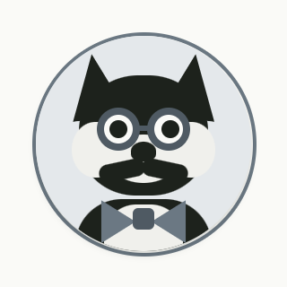

Wat om elk scherm met navigatie heen staat. Het ontwerp komt uit de overdracht (Stap 2 op 1366 en 393, Stap 3 voor de tablet). Onder elk onderdeel staat wat er nu live staat; oranje regels verschillen. Onderaan staan de keuzes die eerst gemaakt moeten worden, pas daarna wordt er gebouwd.
Gelden voor: S2, S3, S4, S11, S12. Geen kopbalk op S1 en S10; geen navigatie tijdens de ronde (S5–S9), volledig weg en niet gedimd.
De lockup: het merkteken (een ruit, onderste helft gevuld) plus het woordbeeld leer◆nu in Archivo 700. In een balk altijd lockup-inkt.svg, 20 px hoog op laptop en tablet, 18 px op de telefoon. De slogan staat nooit naast het woordbeeld, alleen gestapeld eronder.
| Ontwerp | Nu live | |
|---|---|---|
| Vorm | Lockup: ruit + leer◆nu | Woordbeeld met de punt (Wordmark), of alleen het merkteken (Brandmark) |
| Laptop | Lockup, 20 px hoog | Woordbeeld, maat 30 (vanaf 1200 breed) |
| Tablet | Lockup, 20 px hoog | Alleen merkteken, 32 px (768–1199) |
| Telefoon | Lockup, 18 px hoog | Alleen merkteken, 28 px |
| Gedrag | Knop naar Vandaag | Knop naar Vandaag (“leer.nu, naar Vandaag”) |
Eén regel van 56 px op papier met een haarlijn eronder. Links het logo, rechts het sterrental en de held van het kind. Op de voordeur staat de naam ernaast. Op een modulepagina maakt het logo plaats voor het vak zelf.

Sofie| Ontwerp | Nu live | |
|---|---|---|
| Hoogte | 56 op elke maat | 56 telefoon, 64 vanaf 768 |
| Zijmarge | 32 laptop · 24 tablet · 16 telefoon | 24 laptop · 20 tablet · 16 telefoon |
| Grond, lijn | Papier #FBFAF6, haarlijn #D8D6CC onder | Zelfde |
| Midden | Leeg | Vanaf 1200: de bestemmingen als woorden (Vandaag · Onthouden · Jij) |
| Rechts, getal | Sterren: “1.148” Archivo 600 20/24, cijfers even breed; “sterren” Public Sans 14/20 #666C67; op de telefoon zonder het woord | Reeks-pil: vlam + “n dagen op rij”, op elke maat |
| Rechts, held | Held 36 rond met zachte schaduw | Held op zijn plaat, 30, in een knop met de naam |
| Naam | Alleen op de voordeur (S2), Public Sans 16/22 | Overal naast de held, op de telefoon verborgen |
| Modulepagina | Plaat 32 (radius 6, tint van het vak, icoon 16) + naam Archivo 600 17/24 in plaats van het logo; telefoon: terug-pijl in 44×44 ervoor | Logo blijft staan; het vak staat in de rail en in de pagina zelf |
88 px breed, op papier, haarlijn rechts. Een kolom platen van 40×40 (radius 6) met 12 px ertussen, 16 px van boven. Actief: de tint van het vak; anders de inzetkleur #E3E0D4. Iconen 18 px, inkt, lijn 2. In het tekenbord zonder woorden.
Het tekenbord en de overdracht spreken elkaar hier tegen, zie keuze K1. Daarom staan er twee varianten.
Actief staat hier Topo, met een inktrand als tweede drager naast de kleur (vormregel 4). Het tekenbord toont alleen de tint; die rand is mijn toevoeging, zie K4.
Dezelfde vier als de tabbalk op de telefoon, zodat een kind op elk apparaat dezelfde plekken ziet. De vakken staan dan op Oefenen (S3 Vakmenu). Woorden onder de platen zijn een voorstel: het tekenbord heeft ze niet, maar vier bestemmingen herken je minder snel dan zeven vakken.
Zelfde rail, maar platen 48 omdat er met een vinger gewezen wordt; marge 24, raster 3 kolommen, 48 boven de kop. Sterren en naam blijven.
| Ontwerp | Nu live | |
|---|---|---|
| Breedte | 88 | 96 |
| Vanaf | 1024 breed (tablet liggend en groter) | 1200 breed; daaronder een uitklapmenu “Vakken” onder de kopbalk |
| Inhoud | Tekenbord: 7 vakken · overdracht: de 4 bestemmingen (K1) | 5 vakken: Topo, Rekenen, Taal, Klok, Vlaggen |
| Plaat | 40×40, radius 6; 48×48 op de tablet | 36×36 in een knop van minstens 72 hoog |
| Tussenruimte | 12 | 6 |
| Woorden | Geen | Naam van het vak onder de plaat |
| Actief | Plaat in de tint van het vak | Hele knop in de tint, plaat wordt papier, woord in accentinkt |
| Icoon | 18, inkt, lijn 2, ronde kappen | 20, zelfde tekenstijl |
| In een ronde | Weg, niet gedimd | Weg, niet gerenderd |
Onder 1024 breed vervalt de rail en staan de vier bestemmingen onderaan, waar de duim is. 72 px hoog, papier, haarlijn boven, gelijk verdeeld. Elk item minstens 56 breed, icoon 24, woord Public Sans 13/16. Actief: 600 in inkt; anders 400 in #525953, icoon in #666C67.
| Ontwerp | Nu live | |
|---|---|---|
| Vanaf | Onder 1024 | Onder 1200 |
| Hoogte | 72 | 64, 68 vanaf 768 |
| Items | Vandaag · Oefenen · Helden/Verzameling · Jij (K2) | Vandaag · Onthouden · Jij (Vrienden nog niet gebouwd) |
| Iconen | Zon · ruit · medaille · persoon | Zon · vriezer · (familie) · leerling |
| Woord | 13/16; actief 600 | 13–15; actief 700 |
| Actief | Alleen gewicht en inkt | Inktstreep boven + vlak in de inzetkleur + 700 |
| Vakken | Via Oefenen (S3) | Uitklapmenu “Vakken” onder de kopbalk |
Regel uit de overdracht: rail of tabbalk, nooit beide, en elke pagina heeft precies één kopbalk.
| Breedte | Ontwerp | Nu live |
|---|---|---|
| 1366 en breder | Kopbalk + rail 88, marge 32, raster 4 | Kopbalk met bestemmingen + rail 96 (twee navigaties) |
| 1024 liggend | Kopbalk + rail 88 (platen 48), marge 24, raster 3 | Kopbalk + uitklapmenu Vakken + tabbalk |
| 768 staand | Kopbalk + tabbalk 72, kaarten 2 naast elkaar | Kopbalk + uitklapmenu Vakken + tabbalk |
| 393 telefoon | Kopbalk + tabbalk 72, marge 16 | Kopbalk + uitklapmenu Vakken + tabbalk |
| Tijdens een ronde | Geen kopbalk-navigatie, geen rail, geen tabbalk | Zelfde |
Kruis per keuze een optie aan, of schrijf eronder wat je anders wilt. De eerste optie is steeds wat het ontwerp zegt.